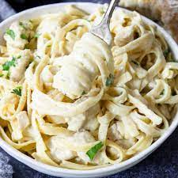

Chicken Alfredo

A Creamy Chicken Alfredo
Ingredients
- 3 skinless, boneless chicken breast halves
- 1 (8 ounce) package penne pasta
- ½ (16 ounce) jar Alfredo sauce
- 1 ½ cups shredded mozzarella cheese, divided
- ¼ cup milk
- 1 tablespoon onion powder
- 1 tablespoon garlic powder
- 1 cup shredded Cheddar cheese
Steps
- Preheat the oven to 350 degrees F (175 degrees C).
- Place chicken into a pot and cover with water. Bring to a boil over high heat;
reduce heat and simmer until no longer pink in the centers and juices run clear,
about 15 minutes.
- At the same time, bring a large pot of lightly salted water to a boil.
Add penne and cook, stirring occasionally, until tender yet firm to the bite, about 11 minutes. Drain.
Drain cooked chicken and cut into bite-size pieces.
- Place chicken, noodles, Alfredo sauce, 1/2 mozzarella cheese, milk, onion powder,
and garlic powder in a large bowl and mix well. Pour into a 1 1/2-quart casserole dish.
Layer remaining mozzarella cheese and Cheddar cheese on top.
- Bake in the preheated oven until melted and bubbly, about 25 minutes.